Version: 14 April 2021
- arrow keys: move through slides
- f: toggle full-screen
Statistical models are “translations” of (scientific) hypotheses and entities.
The formulation of the correct model is a crucial and insightful process.
When we have a “good” statistical model we can draw valid conclusions.
Single-case data are … “just” data.
We don’t need a new statistic for analyzing single-case data.
We “just” need good models.
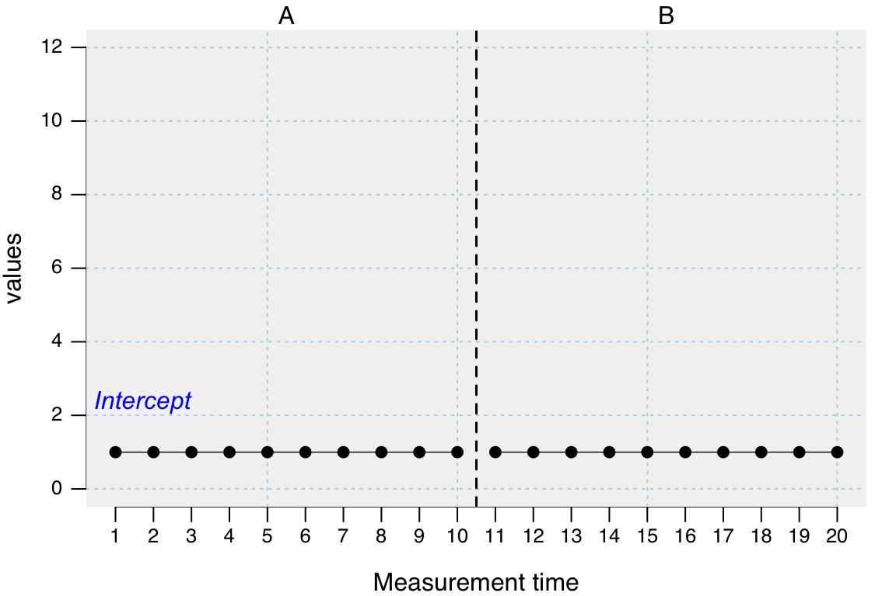
\(y_i = \beta_0\)
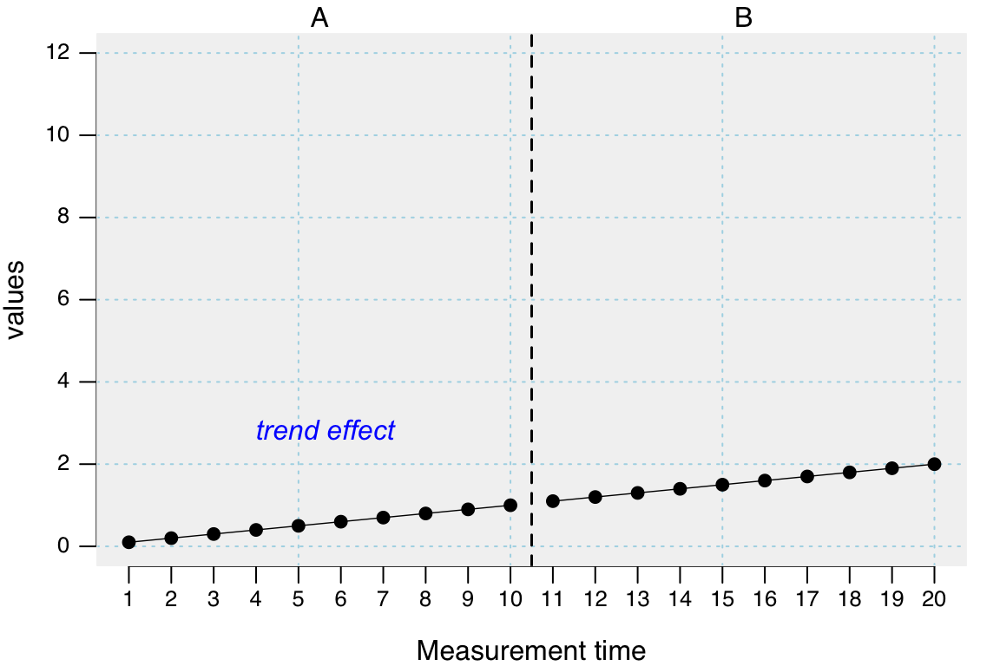
\(y_i = \beta_1 MT_i\)
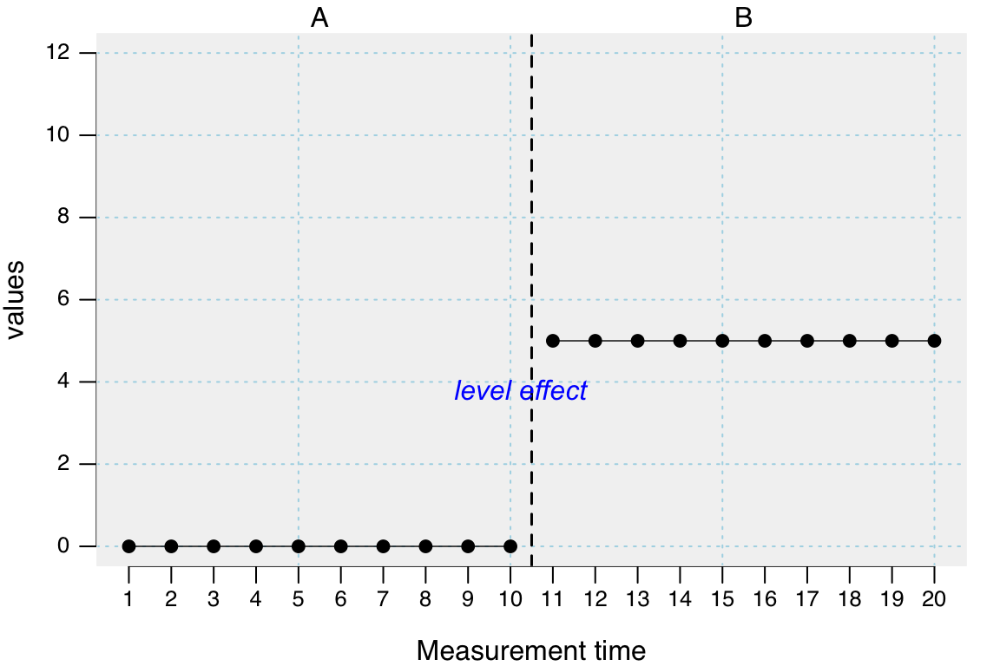
\(y_i = \beta_2 Phase_i\)
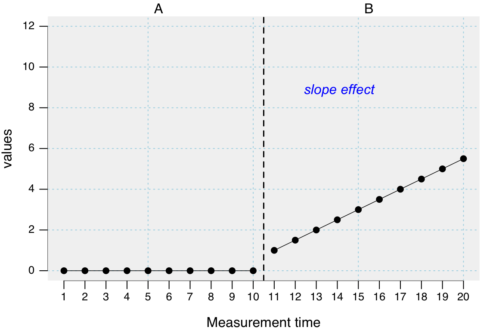
\(y_i = \beta_3 (MT_i-\sigma) \times Phase_i\)
\(\sigma\) := MT at which Phase B starts minus one (Berry & Lewis-Beck)
—— Alternative: \(\sigma\) := MT at which Phase B starts (Huitema & McKean)
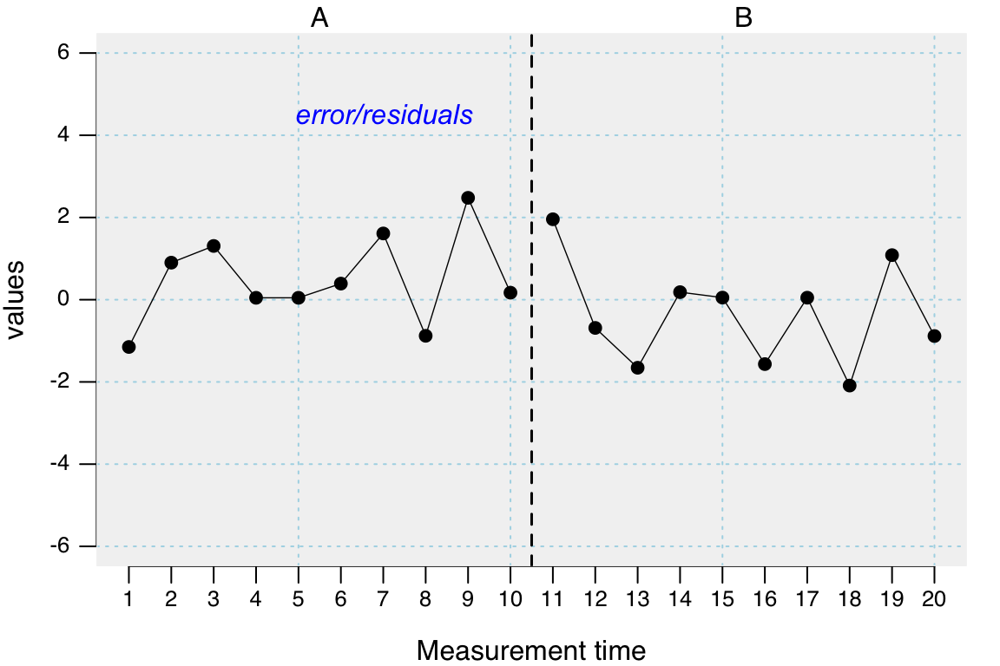
\(y_i = \epsilon_i\)
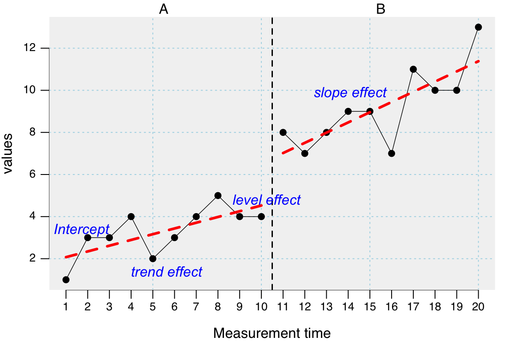
\(y_i = \beta_0 + \beta_1 MT_i + \beta_2 Phase_i + \beta_3 (MT_i-\sigma) \times Phase_i + \epsilon_i\)
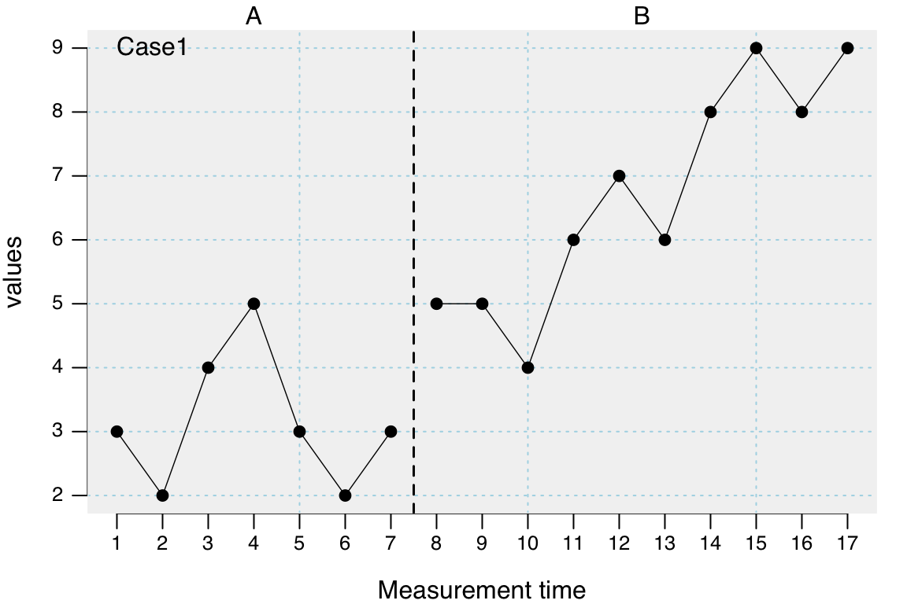
Describe Single-Case Data
Design: A B
Case1
n.A 7
n.B 10
mis.A 0
mis.B 0
Case1
m.A 3.14
m.B 6.70
md.A 3.00
md.B 6.50
sd.A 1.07
sd.B 1.77
mad.A 1.48
mad.B 2.22
min.A 2.00
min.B 4.00
max.A 5.00
max.B 9.00
trend.A -0.04
trend.B 0.53
Piecewise Regression Analysis
Dummy model: B&L-B
Fitted a gaussian distribution.
F(3, 13) = 27.14; p = 0.000; R² = 0.862; Adjusted R² = 0.831
B 2.5% 97.5% SE t p ΔR²
Intercept 3.286 1.695 4.876 0.811 4.049 0.001
Trend mt -0.036 -0.391 0.320 0.181 -0.197 0.847 0.0004
Level phase B 0.764 -1.051 2.580 0.926 0.825 0.424 0.0072
Slope phase B 0.563 0.151 0.975 0.210 2.681 0.019 0.0761
Autocorrelations of the residuals
lag cr
1 -0.04
2 -0.67
3 0.09
Formula: values ~ 1 + mt + phaseB + interB
library(scan) dat <- scdf(c(A = 2,2,0,1,4,3,2,3,2, B = 3,4,5,5,6,7,7,8)) plot(dat) describeSC(dat) plm(dat)
plot(dat)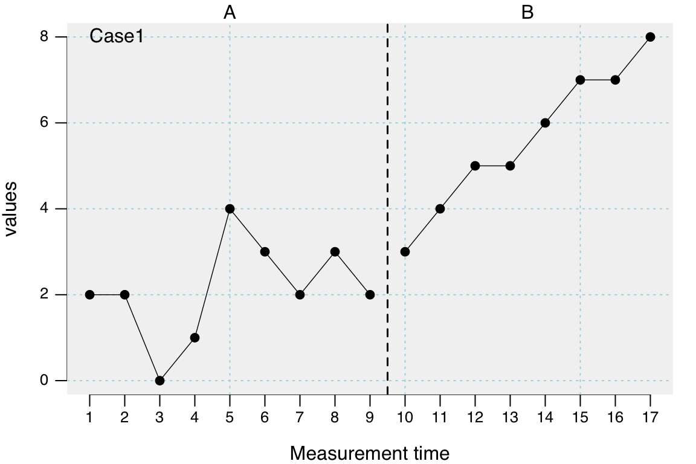
describeSC(dat)Describe Single-Case Data
Design: A B
Case1
n.A 9
n.B 8
mis.A 0
mis.B 0
Case1
m.A 2.11
m.B 5.62
md.A 2.00
md.B 5.50
sd.A 1.17
sd.B 1.69
mad.A 1.48
mad.B 2.22
min.A 0.00
min.B 3.00
max.A 4.00
max.B 8.00
trend.A 0.15
trend.B 0.68
plm(dat)Piecewise Regression Analysis
Dummy model: B&L-B
Fitted a gaussian distribution.
F(3, 13) = 31.39; p = 0.000; R² = 0.879; Adjusted R² = 0.851
B 2.5% 97.5% SE t p ΔR²
Intercept 1.361 0.108 2.615 0.640 2.128 0.053
Trend mt 0.150 -0.073 0.373 0.114 1.320 0.210 0.0163
Level phase B -0.140 -1.852 1.573 0.874 -0.160 0.875 0.0002
Slope phase B 0.529 0.181 0.876 0.177 2.984 0.011 0.0831
Autocorrelations of the residuals
lag cr
1 0.00
2 -0.58
3 -0.03
Formula: values ~ 1 + mt + phaseB + interB
Whether you need to include a trend, level, or slope effect is a theoretical decision:
What effects did prior studies reveal?
How do you expect the process to evolve?
Do you expect a continuous change independent of the intervention? (trend effect)
Piecewise Regression Analysis
Dummy model: B&L-B
Fitted a gaussian distribution.
F(3, 13) = 14.53; p = 0.000; R² = 0.770; Adjusted R² = 0.717
B 2.5% 97.5% SE t p ΔR²
Intercept 1.250 -0.332 2.832 0.807 1.548 0.146
Trend mt 0.150 -0.131 0.431 0.143 1.046 0.315 0.0193
Level phase B 2.364 0.203 4.526 1.103 2.144 0.052 0.0812
Slope phase B -0.031 -0.469 0.407 0.224 -0.138 0.892 0.0003
Autocorrelations of the residuals
lag cr
1 -0.21
2 -0.08
3 -0.45
Formula: values ~ 1 + mt + phaseB + interB
The plm function comes with three additional parameters:
trend, level, and slope
All are set to TRUE by default. That is, all three effects are included into the model.
By explicitly setting an argument to FALSE (e.g. level = FALSE) you drop this effect from the model.
In this example:
\(y_i = \beta_0 + \beta_1 MT_i + \beta_2 Phase_i + \beta_3 (MT_i-\sigma) \times Phase_i + \epsilon_i\)
becomes
\(y_i = \beta_0 + \beta_1 MT_i + \beta_3 (MT_i-\sigma) \times Phase_i + \epsilon_i\)
\(y_i = \beta_0 + \beta_1 MT_i + \beta_2 Phase_i + \beta_3 (MT_i-\sigma) \times Phase_i + \epsilon_i\)
\(y_i = \beta_0 + \beta_2 Phase_i + \epsilon_i\) (basically a t-test)
plm(dat, trend = FALSE, slope = FALSE)
Piecewise Regression Analysis
Dummy model: B&L-B
Fitted a gaussian distribution.
F(1, 15) = 43.24; p = 0.000; R² = 0.742; Adjusted R² = 0.725
B 2.5% 97.5% SE t p ΔR²
Intercept 2.0 1.284 2.716 0.365 5.477 0
Level phase B 3.5 2.457 4.543 0.532 6.575 0 0.7424
Autocorrelations of the residuals
lag cr
1 -0.01
2 0.00
3 -0.37
Formula: values ~ 1 + phaseB
Take the previous data example …
dat <- scdf(c(A = 2,2,0,1,4,3,2,3,2, B = 3,4,5,5,6,7,7,8))
and recalculate a plm model without a level effect.
plm(dat, level = FALSE)
Piecewise Regression Analysis
Dummy model: B&L-B
Fitted a gaussian distribution.
F(2, 14) = 50.60; p = 0.000; R² = 0.878; Adjusted R² = 0.861
B 2.5% 97.5% SE t p ΔR²
Intercept 1.393 0.242 2.543 0.587 2.373 0.033
Trend mt 0.141 -0.043 0.324 0.094 1.501 0.155 0.0196
Slope phase B 0.523 0.195 0.851 0.167 3.125 0.007 0.0848
Autocorrelations of the residuals
lag cr
1 0.01
2 -0.58
3 -0.02
Formula: values ~ 1 + mt + interB
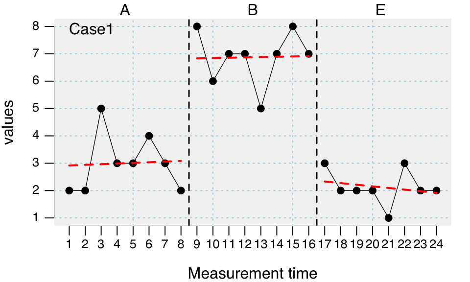
What is your hypothesis here?
it depends …
Contrasts are model settings that define which levels of a categorical variable are compared in a model.
In single-case models the phase variable is such a categorical variable.
The level-effect and the slope-effect in a model depend on the setting of the contrasts.
Here we will learn about two contrast settings:
| phase | mt | values | level_B | level_C | slope_B | slope_C |
|---|---|---|---|---|---|---|
| A | 1 | 3 | 0 | 0 | 0 | 0 |
| A | 2 | 6 | 0 | 0 | 0 | 0 |
| A | 3 | 4 | 0 | 0 | 0 | 0 |
| A | 4 | 7 | 0 | 0 | 0 | 0 |
| B | 5 | 5 | 1 | 0 | 1 | 0 |
| B | 6 | 3 | 1 | 0 | 2 | 0 |
| B | 7 | 4 | 1 | 0 | 3 | 0 |
| B | 8 | 6 | 1 | 0 | 4 | 0 |
| C | 9 | 7 | 0 | 1 | 0 | 1 |
| C | 10 | 5 | 0 | 1 | 0 | 2 |
| C | 11 | 6 | 0 | 1 | 0 | 3 |
| C | 12 | 4 | 0 | 1 | 0 | 4 |
| phase | mt | values | level_B | level_C | slope_B | slope_C |
|---|---|---|---|---|---|---|
| A | 1 | 3 | 0 | 0 | 0 | 0 |
| A | 2 | 6 | 0 | 0 | 0 | 0 |
| A | 3 | 4 | 0 | 0 | 0 | 0 |
| A | 4 | 7 | 0 | 0 | 0 | 0 |
| B | 5 | 5 | 1 | 0 | 1 | 0 |
| B | 6 | 3 | 1 | 0 | 2 | 0 |
| B | 7 | 4 | 1 | 0 | 3 | 0 |
| B | 8 | 6 | 1 | 0 | 4 | 0 |
| C | 9 | 7 | 1 | 1 | 5 | 1 |
| C | 10 | 5 | 1 | 1 | 6 | 2 |
| C | 11 | 6 | 1 | 1 | 7 | 3 |
| C | 12 | 4 | 1 | 1 | 8 | 4 |
scanThe plm function has an argument model (default model = "B&L-B")
model = "B&L-B" will set contrasts for each phase against phase A.
model = "JW" will set contrasts for each phase against its preceding phase.
Example:
plm(case, model = "JW")
Comparing phase effects to phase A
Piecewise Regression Analysis
Dummy model: B&L-B
Fitted a gaussian distribution.
F(5, 18) = 20.99; p = 0.000; R² = 0.854; Adjusted R² = 0.813
B 2.5% 97.5% SE t p ΔR²
Intercept 2.893 1.384 4.402 0.770 3.758 0.001
Trend mt 0.024 -0.275 0.323 0.152 0.156 0.878 0.0002
Level phase B 3.738 1.779 5.698 1.000 3.739 0.002 0.1137
Level phase E -0.881 -4.696 2.934 1.946 -0.453 0.656 0.0017
Slope phase B -0.012 -0.434 0.411 0.216 -0.055 0.957 0.0000
Slope phase E -0.083 -0.506 0.339 0.216 -0.387 0.704 0.0012
Autocorrelations of the residuals
lag cr
1 -0.26
2 -0.20
3 0.25
Formula: values ~ 1 + mt + phaseB + phaseE + interB + interE
Comparing phase effects of each phase to the to previous phase
Piecewise Regression Analysis
Dummy model: JW
Fitted a gaussian distribution.
F(5, 18) = 20.99; p = 0.000; R² = 0.854; Adjusted R² = 0.813
B 2.5% 97.5% SE t p ΔR²
Intercept 2.893 1.384 4.402 0.770 3.758 0.001
Trend mt 0.024 -0.275 0.323 0.152 0.156 0.878 0.0002
Level phase B 3.738 1.779 5.698 1.000 3.739 0.002 0.1137
Level phase E -4.524 -6.483 -2.564 1.000 -4.525 0.000 0.1666
Slope phase B -0.012 -0.434 0.411 0.216 -0.055 0.957 0.0000
Slope phase E -0.071 -0.494 0.351 0.216 -0.331 0.744 0.0009
Autocorrelations of the residuals
lag cr
1 -0.26
2 -0.20
3 0.25
Formula: values ~ 1 + mt + phaseB + phaseE + interB + interE
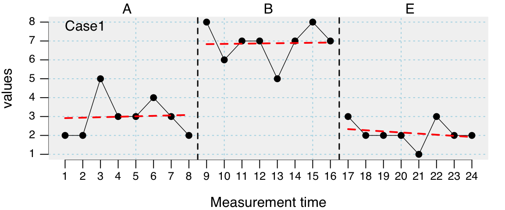
| Model1: Contrast to phase A | Model2: Contrast to previous phase | |
|---|---|---|
| Intercept | 2.89 | 2.89 |
| Trend | 0.02 | 0.02 |
| Level B | 3.74 | 3.74 |
| Level E | -0.88 | -4.52 |
| Slope B | -0.01 | -0.01 |
| Slope E | -0.08 | -0.07 |
\(2.89 + (16 * 0.02) - 0.88 \approx 2.34\)
\(2.89 + (8 * 0.02) + 3.74 + (8 * (0.02 - 0.01)) - 4.52 \approx 2.34\)
Create the following example dataset
case <- scdf( c(A1 = 2,3,1,2,3,2, B1 = 6,6,5,7,7,5, A2 = 3,2,2,3,1,3, B2 = 9,8,9,10,8,9))
plot(case, lines = list("mean", col = "red", lwd = 2))
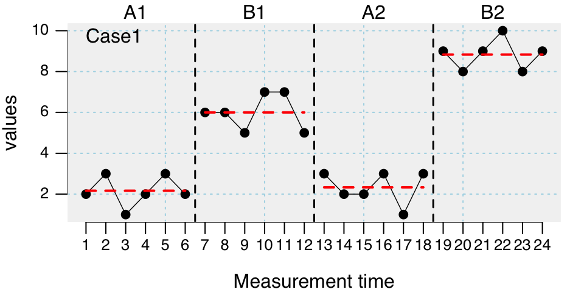
Drop the slope effect from the model and contrast each phase to the previous one.
plm(case, model = "JW", slope = FALSE)
Piecewise Regression Analysis
Dummy model: JW
Fitted a gaussian distribution.
F(4, 19) = 67.35; p = 0.000; R² = 0.934; Adjusted R² = 0.920
B 2.5% 97.5% SE t p ΔR²
Intercept 2.167 1.219 3.114 0.483 4.481 0
Trend mt 0.000 -0.194 0.194 0.099 0.000 1 0.0000
Level phase B1 3.833 2.341 5.326 0.762 5.034 0 0.0879
Level phase A2 -3.667 -5.159 -2.174 0.762 -4.815 0 0.0804
Level phase B2 6.500 5.007 7.993 0.762 8.535 0 0.2526
Autocorrelations of the residuals
lag cr
1 -0.47
2 -0.24
3 0.44
Formula: values ~ 1 + mt + phaseB1 + phaseA2 + phaseB2
| mt | phase | mood | sleep |
|---|---|---|---|
| 1 | A | 2 | 4 |
| 2 | A | 3 | 6 |
| 3 | A | 2 | 5 |
| 4 | A | 3 | 7 |
| 5 | A | 1 | 3 |
| 6 | A | 2 | 5 |
| 7 | B | 7 | 7 |
| 8 | B | 6 | 7 |
| 9 | B | 5 | 6 |
| 10 | B | 4 | 4 |
| 11 | B | 5 | 6 |
| 12 | B | 6 | 5 |
| 13 | B | 5 | 7 |
| 14 | B | 8 | 8 |
\(mood_i = \beta_0 + \beta_1 mt_i + \beta_2 phase_i + \beta_3 (mt_i-6) \times phase_i + \beta_4 sleep + \epsilon_i\)
Piecewise Regression Analysis
Dummy model: B&L-B
Fitted a gaussian distribution.
F(3, 10) = 10.80; p = 0.002; R² = 0.764; Adjusted R² = 0.693
B 2.5% 97.5% SE t p ΔR²
Intercept 2.667 0.526 4.807 1.092 2.442 0.035
Trend mt -0.143 -0.692 0.407 0.280 -0.509 0.622 0.0061
Level phase B 3.619 1.174 6.064 1.248 2.901 0.016 0.1984
Slope phase B 0.214 -0.440 0.868 0.334 0.642 0.535 0.0097
Autocorrelations of the residuals
lag cr
1 -0.05
2 -0.05
3 -0.24
Formula: mood ~ 1 + mt + phaseB + interB
We can update a regression model with the update argument of the plm function.
Plesae execute the following code:
plm(case, update = .~. + sleep)
Piecewise Regression Analysis
Dummy model: B&L-B
Fitted a gaussian distribution.
F(4, 9) = 21.09; p = 0.000; R² = 0.904; Adjusted R² = 0.861
B 2.5% 97.5% SE t p ΔR²
Intercept -0.553 -2.820 1.714 1.157 -0.478 0.644
Trend mt -0.107 -0.478 0.263 0.189 -0.568 0.584 0.0035
Level phase B 2.956 1.269 4.642 0.861 3.434 0.007 0.1263
Slope phase B 0.135 -0.308 0.578 0.226 0.596 0.566 0.0038
sleep 0.619 0.283 0.955 0.172 3.608 0.006 0.1394
Autocorrelations of the residuals
lag cr
1 -0.49
2 0.26
3 -0.26
Formula: mood ~ mt + phaseB + interB + sleep
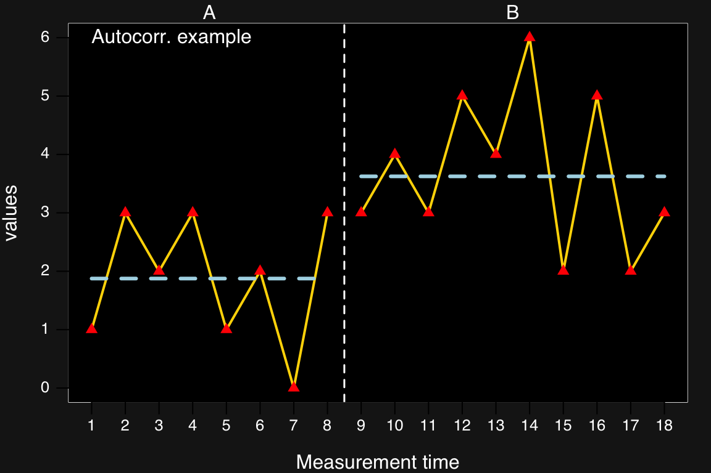
The autocorr() function takes a lag argument and provides auto-correlations of the dependent variable for each phase and across all phases.
autocorr(case, lag = 3)
Autocorrelations
case phase lag_1 lag_2 lag_3
Autocorr. example A -0.47 0.33 -0.57
Autocorr. example B -0.46 0.50 -0.43
Autocorr. example all 0.08 0.61 -0.10
The plm() gives information on the autocorrealtion of the residuals up to lag 3
Piecewise Regression Analysis
Dummy model: B&L-B
Fitted a gaussian distribution.
F(3, 14) = 2.89; p = 0.073; R² = 0.383; Adjusted R² = 0.250
B 2.5% 97.5% SE t p ΔR²
Intercept 2.036 0.013 4.058 1.032 1.973 0.069
Trend mt -0.036 -0.436 0.365 0.204 -0.175 0.864 0.0013
Level phase B 2.317 -0.123 4.756 1.245 1.861 0.084 0.1527
Slope phase B -0.031 -0.523 0.461 0.251 -0.123 0.904 0.0007
Autocorrelations of the residuals
lag cr
1 -0.56
2 0.53
3 -0.57
Formula: values ~ 1 + mt + phaseB + interB
The AR argument of the plm() function allows for modeling autocorrelated residuals up to a provided lag.
plm(case)
| Estimate | Std. Error | t value | Pr(>|t|) | |
|---|---|---|---|---|
| Intercept | 2.0357143 | 1.0319277 | 1.9727295 | 0.0686083 |
| Trend | -0.0357143 | 0.2043521 | -0.1747683 | 0.8637639 |
| Level B | 2.3166667 | 1.2447042 | 1.8612186 | 0.0838416 |
| Slope B | -0.0309524 | 0.2510365 | -0.1232983 | 0.9036235 |
plm(case, AR = 3)
| Value | Std.Error | t-value | p-value | |
|---|---|---|---|---|
| Intercept | 2.446834 | 0.5981378 | 4.0907529 | 0.0011019 |
| Trend | -0.138445 | 0.1216436 | -1.1381192 | 0.2741733 |
| Level B | 3.044013 | 0.7525916 | 4.0447079 | 0.0012057 |
| Slope B | 0.027227 | 0.1362534 | 0.1998261 | 0.8444900 |
The hplm() function is an extension of the plm() function taking many of its parameters and allowing to analyze multiple cases at once:
trend, level, and slope argumentsupdate.fixed for extending the regression model (fixed part)model for defining the contrastswith some additional arguments for multilevel models.
Type ?hplm to open a help page.
Example dataset GruenkeWilbert2014
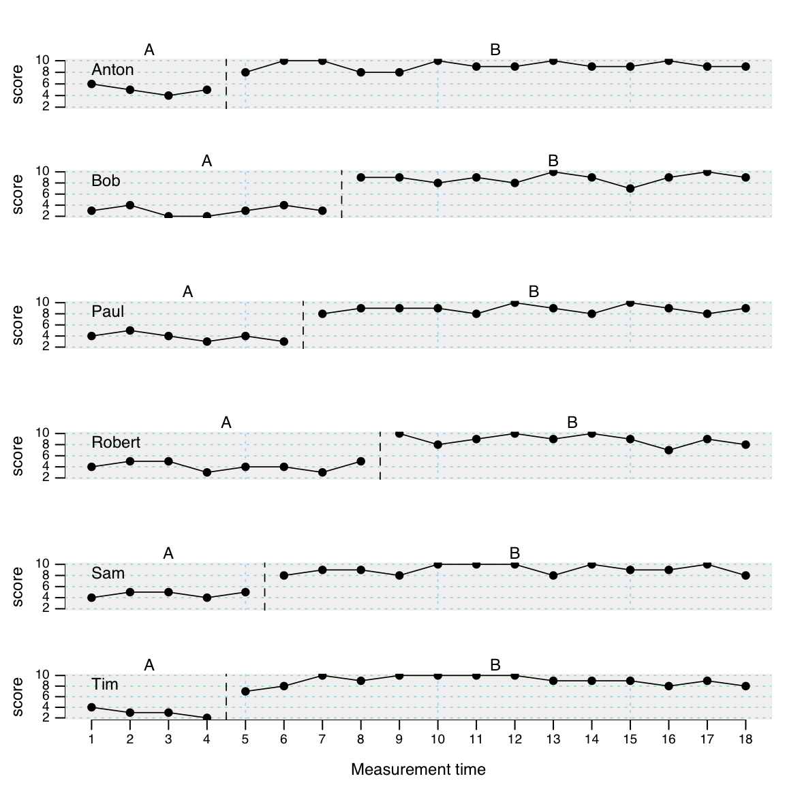
Replicate the following code to get an overview of the GruenkeWilbert2014 dataset
summary(GruenkeWilbert2014) describeSC(GruenkeWilbert2014)
summary(GruenkeWilbert2014)
#A single-case data frame with 6 cases
Measurements Design
Anton 18 A B
Bob 18 A B
Paul 18 A B
Robert 18 A B
Sam 18 A B
Tim 18 A B
Variable names:
mt <measurement-time variable>
score <dependent variable>
phase <phase variable>
Note: Data from an intervention study on text comprehension. Gruenke, M., Wilbert, J., & Stegemann-Calder, K. (2013). Analyzing the effects of story mapping on the reading comprehension of children with low intellectual abilities. Learning Disabilities: A Contemporary Journal, 11(2), 51-64.
Author of data: Matthias Gruenke and Juergen Wilbert
describeSC(GruenkeWilbert2014)
Describe Single-Case Data
Design: A B
Anton Bob Paul Robert Sam Tim
n.A 4 7 6 8 5 4
n.B 14 11 12 10 13 14
mis.A 0 0 0 0 0 0
mis.B 0 0 0 0 0 0
Anton Bob Paul Robert Sam Tim
m.A 5.00 3.00 3.83 4.12 4.60 3.00
m.B 9.14 8.82 8.83 8.90 9.08 9.00
md.A 5.00 3.00 4.00 4.00 5.00 3.00
md.B 9.00 9.00 9.00 9.00 9.00 9.00
sd.A 0.82 0.82 0.75 0.83 0.55 0.82
sd.B 0.77 0.87 0.72 0.99 0.86 0.96
mad.A 0.74 1.48 0.74 1.48 0.00 0.74
mad.B 1.48 0.00 0.74 1.48 1.48 1.48
min.A 4.00 2.00 3.00 3.00 4.00 2.00
min.B 8.00 7.00 8.00 7.00 8.00 7.00
max.A 6.00 4.00 5.00 5.00 5.00 4.00
max.B 10.00 10.00 10.00 10.00 10.00 10.00
trend.A -0.40 0.04 -0.26 -0.06 0.10 -0.60
trend.B 0.03 0.04 0.02 -0.14 0.03 0.00
Note. The following variables were used in this analysis:
'score' as dependent variable, 'phase' as phase ,and 'mt' as measurement time.
Hierarchical Piecewise Linear Regression
Estimation method ML
Slope estimation method: B&L-B
6 Cases
ICC = 0.001; L = 0.0; p = 0.953
Fixed effects (score ~ 1 + mt + phaseB + interB)
B SE df t p
Intercept 4.169 0.260 99 16.042 0.000
Trend mt -0.081 0.059 99 -1.373 0.173
Level phase B 5.208 0.300 99 17.343 0.000
Slope phase B 0.087 0.062 99 1.393 0.167
Random effects (~1 | case)
EstimateSD
Intercept 0.149
Residual 0.866
Example dataset Leidig2018
35 cases with up to 108 measurements (AB-Design, effect of a “good behavior game” on academic engagement and disruptive behavior)
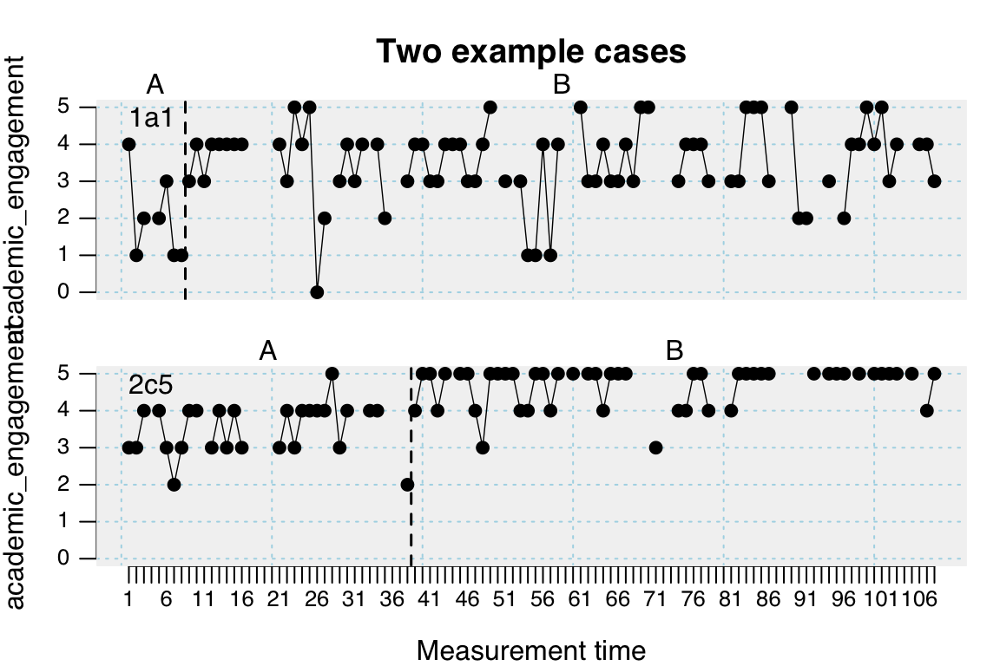
Hierarchical Piecewise Linear Regression
Estimation method ML
Slope estimation method: B&L-B
35 Cases
ICC = 0.344; L = 875.4; p = 0.000
Fixed effects (academic_engagement ~ 1 + mt + phaseB + interB)
B SE df t p
Intercept 3.042 0.125 2376 24.281 0.000
Trend mt -0.004 0.004 2376 -0.966 0.334
Level phase B 0.730 0.067 2376 10.823 0.000
Slope phase B 0.008 0.004 2376 2.095 0.036
Random effects (~1 | case)
EstimateSD
Intercept 0.680
Residual 0.784
Hierarchical Piecewise Linear Regression
Estimation method ML
Slope estimation method: B&L-B
35 Cases
ICC = 0.311; L = 759.2; p = 0.000
Fixed effects (disruptive_behavior ~ 1 + mt + phaseB + interB)
B SE df t p
Intercept 1.267 0.098 2349 12.927 0
Trend mt 0.024 0.003 2349 7.689 0
Level phase B -1.327 0.056 2349 -23.606 0
Slope phase B -0.025 0.003 2349 -7.802 0
Random effects (~1 | case)
EstimateSD
Intercept 0.525
Residual 0.655
Take the Leidig2018 dataset and calculate an hplm model.
Choose disruptive_behavior as the dependent variable (dvar = "disruptive_behavior")
Add random slopes to the regression model (random.slopes = TRUE) and likelihood ratio tests (lr.test = TRUE)
Warning: Using formula(x) is deprecated when x is a character vector of length > 1. Consider formula(paste(x, collapse = " ")) instead.
Hierarchical Piecewise Linear Regression
Estimation method ML
Slope estimation method: B&L-B
35 Cases
ICC = 0.311; L = 759.2; p = 0.000
Fixed effects (disruptive_behavior ~ 1 + mt + phaseB + interB)
B SE df t p
Intercept 1.493 0.128 2349 11.631 0.000
Trend mt 0.014 0.004 2349 3.189 0.001
Level phase B -1.286 0.147 2349 -8.764 0.000
Slope phase B -0.013 0.004 2349 -3.175 0.002
Random effects (~1 + mt + phaseB + interB | case)
EstimateSD L df p
Intercept 0.710 210.92 4 0.000
Trend mt 0.015 12.90 4 0.012
Level phase B 0.810 138.84 4 0.000
Slope phase B 0.015 10.43 4 0.034
Residual 0.592 NA NA NA
We found a significant variance in the slope and the level effects between subjects
Can we explain these differences by means of attributes of the indivudals?
The Leidig2018 dataset has an accompanying dataset with information on each subject Leidig2018_l2:
[1] "class" "case" "gender" [4] "migration" "first_language_german" "SDQ_TOTAL" [7] "SDQ_EXTERNALIZING" "SDQ_INTERNALIZING" "ITRF_TOTAL" [10] "ITRF_ACADEMIC" "ITRF_BEHAVIOR"
| class | case | gender | migration | first_language_german | SDQ_TOTAL | SDQ_EXTERNALIZING | SDQ_INTERNALIZING | ITRF_TOTAL | ITRF_ACADEMIC | ITRF_BEHAVIOR |
|---|---|---|---|---|---|---|---|---|---|---|
| 1a | 1a1 | 0 | 0 | 1 | 10 | 9 | 1 | 11 | 7 | 4 |
| 1a | 1a2 | 0 | 0 | 1 | 11 | 11 | 0 | 21 | 10 | 11 |
| 1a | 1a3 | 1 | 0 | 1 | 6 | 6 | 0 | 18 | 1 | 17 |
| 1a | 1a4 | 0 | 1 | 1 | 8 | 5 | 3 | 14 | 7 | 7 |
| 1a | 1a5 | 0 | 1 | 1 | 8 | 7 | 1 | 13 | 4 | 9 |
| 2a | 2a1 | 0 | 1 | 0 | 9 | 8 | 1 | 9 | 2 | 7 |
| 2a | 2a2 | 0 | 1 | 0 | 7 | 4 | 3 | 16 | 16 | 0 |
| 2a | 2a3 | 0 | 1 | 0 | 16 | 13 | 3 | 23 | 14 | 9 |
hplm() functioncase with the casenames/id.data.l2 argument is set accoding to the name of the l2 dataset.
hplm(Leidig2018, data.l2 = Leidig2018_l2)update.fixed argument must be set to include the l2 variables of interest.
hplm(Leidig2018, data.l2 = Leidig2018_l2, update.fixed = .~. + SDQ_EXTERNALIZING * phaseB)What effect does externalizing behavior have on the intervention strength on disruptive behavior?
Code and execute the following model.
Note: the scale function is needed to center the predictor variable (necessary in multilevel models)
hplm( Leidig2018, data.l2 = Leidig2018_l2, update.fixed = .~. + scale(SDQ_EXTERNALIZING) * phaseB + scale(SDQ_EXTERNALIZING) * interB, dvar = "disruptive_behavior" )
Hierarchical Piecewise Linear Regression
Estimation method ML
Slope estimation method: B&L-B
35 Cases
ICC = 0.311; L = 759.2; p = 0.000
Fixed effects (disruptive_behavior ~ mt + phaseB + interB + scale(SDQ_EXTERNALIZING) + phaseB:scale(SDQ_EXTERNALIZING) + interB:scale(SDQ_EXTERNALIZING))
B SE df t p
Intercept 1.319 0.095 2347 13.951 0.000
Trend mt 0.020 0.003 2347 6.375 0.000
Level phase B -1.306 0.056 2347 -23.457 0.000
Slope phase B -0.020 0.003 2347 -6.396 0.000
scale(SDQ_EXTERNALIZING) 0.307 0.090 33 3.397 0.002
Level phase B:scale(SDQ_EXTERNALIZING) -0.202 0.043 2347 -4.702 0.000
Slope phase B:scale(SDQ_EXTERNALIZING) -0.001 0.001 2347 -2.522 0.012
Random effects (~1 | case)
EstimateSD
Intercept 0.501
Residual 0.647
Future developments of scan